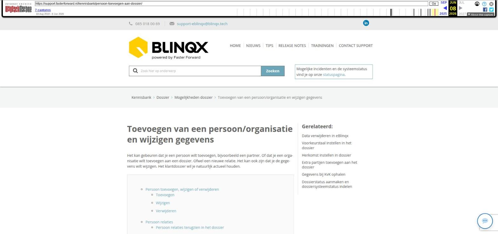

Aplaza correspondentieberichten verwerken

Tekstinhoud
Title: Aplaza correspondentieberichten verwerken | Support
URL: https://web.archive.org/web/20260114013614/https://support.fasterforward.nl/kennisbank/aplaza-berichten-verwerken/
Source element: <article>
---
Aplaza correspondentieberichten verwerken
Aplaza stuurt correspondentieberichten, waaronder bijvoorbeeld polisbladen. Deze documenten wil je graag onder het klantdossier hebben staan. In dit artikel lees je hoe je een correspondentiebericht verwerkt.
Berichten bekijken
Betekenis iconen van bericht
Bericht toekennen
Bericht verwerken
1. Open het bericht
2. Koppel het bericht aan het dossier en de polis/het pakket
Mutatievoorstellen
3. Ververs het Aplaza bericht
4. Maak een taak aan
5. Bericht is verwerkt
6. Berichten verwijderen uit Aplaza inbox
Berichten automatisch verwijderen
Handmatig bericht verwijderen
Matchen aan schademelding
Prolongatie & mutatie berichten
Offerteberichten
Berichten bekijken
Ga naar de Aplaza inbox door in de 'Binnengekomen berichten' tegen op het Aplaza icoon te klikken.
Je komt nu in de Aplaza inbox. Bovenaan zijn er diverse filters, waarmee je de weergegeven berichten kunt verfijnen.
Betekenis iconen van bericht
Wanneer een bericht automatisch gematcht is aan een dossier, herken je dit aan het huisjesicoon (vooraan de regel). Door hier met jouw muis op te gaan staan, zie je het dossiernummer waar het bericht aan gekoppeld is.
Het pagina-icoon dat daarnaast staat geeft aan dat het bericht een document bericht is.
Bericht toekennen
De berichten in de Aplaza inbox kan je toekennen aan jouzelf of aan een collega. Zo is het duidelijk wie het bericht gaat verwerken. Het toekennen doe je door te klikken op 'Toekennen'.
Vervolgens klik je op de naam van degene aan wie je het bericht wilt toekennen. De personen die in deze lijst getoond worden zijn de gebruikers die de rol 'Adviseur' hebben. Dit kan je controleren, als je de juiste rechten hebt, via Beheer – Organisatie & Personen – betreffende personen – rechts bij de gekoppelde organisatie.
Bericht verwerken
Volg onderstaande stappen om het correspondentiebericht op de juiste wijze te verwerken in eBlinqx.
1. Open het bericht
Klik op het wijzigicoon aan de rechterkant van de regel om het bericht te bekijken en aan te vullen. Je komt nu in het onderstaande scherm.
2. Koppel het bericht aan het dossier en de polis/het pakket
Op basis van het polis(pakket)nummer koppelt eBlinqx het bericht automatisch aan het bijbehorende klantdossier en polis/pakket (als je niet werkt met mutatievoorstellen). Het pakketnummer staat links in de productkaart.
Als er geen polis/pakket gevonden is, zie je een oranje driehoek staan. Controleer dan of de offerte/polis (inclusief pakket onderdelen/rechterdelen) met het juiste polisnummer zijn aangemaakt in het klantdossier. Zo niet, maak deze dan eerst aan in het dossier.
Als er nog geen klantdossier is voor deze klant, maak dan eerst een klantdossier aan en voeg vervolgens de polis/het pakket toe.
Wanneer bovenstaande gegevens wel in eBlinqx staan dan kan je het bericht aan het pakket matchen door middel van de blauwe pijl.
Er verschijnt dan een pop-up waar je kan klikken op 'Zoek dossier' om het dossier op te zoeken.
Hier kan je via verschillende velden het dossier en pakketnummer opzoeken:
Mutatievoorstellen
Als je werkt met mutatievoorstellen dan wordt het Aplazabericht gematcht aan de hand van het polisnummer rechts in de productkaart. Hierdoor zie je in het Aplaza bericht per polis een blauwe melding wanneer er een mutatievoorstel voor deze polis open staat. Klik op deze melding om deze te bekijken. Ook worden eventuele conflicten per polis getoond. Wanneer je werkt met de setting maatschappij controlerend dan wordt ook de 'mutaties in behandelingtabel' getoond. Hier kunnen de zandlopers, indien gewenst, afvinkt worden.
3. Ververs het Aplaza bericht
Wanneer je het dossier hebt gekoppeld via het blauwe pijtje dan kan je op de 'Verversen' klikken, nadat de polis in het dossier is toegevoegd. Het bericht wordt dan opnieuw gematcht. Als het product volledig gematcht is, staat er voor alle velden een vinkje.
4. Maak een taak aan
Indien gewenst kan je een taak aanmaken vanuit het Aplaza bericht. Dit met de knop 'Taak aanmaken'. Via het dropdownpijltje kan je kiezen of je een persoonlijke of groepstaak aan wilt maken.
5. Bericht is verwerkt
Het document uit het correspondentiebericht is nu verwerkt en terug te vinden in het dossier onder het tabblad 'Documenten'. Wanneer je op het dossiernummer klikt, komt je direct in de productkaart van de verzekering.
Indien je op de naam van het document klikt, kom je rechtstreeks in het tabblad documenten in het desbetreffende dossier.
Indien gewenst kan je nu de klant hiervan op de hoogte brengen of andere acties ondernemen voor verdere verwerking.
6. Berichten verwijderen uit Aplaza inbox
Wanneer je één of meerdere Aplaza berichten hebt verwerkt in het klantdossier, is het verstandig om deze berichten te verwijderen. Zo behoud je het overzicht. Het verwijderen van het bericht kan via het rode kruisje of via de knop 'Verwijderen'. Deze knop en het rode kruisje is alleen zichtbaar als het bericht aan niemand is toegekend of voor de persoon aan wie de persoon is toegekend.
Berichten automatisch verwijderen
Indien je de juiste rechten hebt, kan je het zo instellen dat berichten automatisch door eBlinqx worden verwijderd. Dit gebeurt op het moment dat het bericht (handmatig) gekoppeld is aan het dossier. Wanneer je het bericht eerst nog handmatig moet aanvullen, wordt het bericht pas verwijderd als je terug gaat naar het berichtenoverzicht in de Aplaza inbox. Het instellen doe je vanuit de Aplaza inbox – hamburgermenu – Instellingen.
Het wel of niet automatisch verwijderen bepaal je door middel van het soort document. Je kunt per soort document aangeven of deze door het systeem direct verwijderd moet worden. De soort documenten die hier getoond worden zijn de soort documenten met een AFD protocol. Let op: hier wordt de originele naam getoond. Pas je de naam van een soort document met AFD protocol aan dan zie je hier niet de aangepaste naam staan.
Het verwijderen gaat in vanaf het moment dat de instelling is gedaan. Dit werkt niet met terugwerkende kracht. Het automatisch verwijderen geldt alleen voor correspondentieberichten. Berichten waarbij een nieuwe polis/dossier wordt aangemaakt of een bestaande polis wordt aangepast (offerteberichten) moeten altijd handmatig verwijderd worden.
Handmatig bericht verwijderen
Om een bericht handmatig te verwijderen, klik je op het rode kruisje aan het einde van de regel. Je kan ook in het bericht zelf op de knop 'Verwijderen' klikken rechtsboven.
Het is ook mogelijk om meerdere berichten tegelijk te verwijderen. Hiervoor selecteer je in de Aplaza inbox meerdere berichten en klik je vervolgens onderaan de pagina op 'Verwijder geselecteerde berichten'.
Matchen aan schademelding
Ook documenten omtrent een schademelding worden via correspondentieberichten in Aplaza verwerkt. Op basis van het schadenummer wordt het bericht gematcht aan de juiste schademelding. Als het bericht is gekoppeld aan een schademelding dan zie je dit ook terug in het Aplazabericht.
Wanneer de maatschappij het schadenummer niet meestuurt en eBlinqx kan een match maken op polisnummer dan wordt het bericht gekoppeld aan de polis of pakket. Het bericht is dan verwerkt, het is dan niet meer mogelijk om het bericht te koppelen aan de schademelding. De volgende melding wordt dan getoond:
Als eBlinqx geen match kan maken op het schadenummer en op polis of pakket dan komt er oranje driehoek hiervoor te staan. Je kan dan zelf kiezen of je het bericht matcht aan de schademelding of aan de polis. De match kan je maken door middel van de blauwe pijl.
Prolongatie & mutatie berichten
Prolongatie- en mutatie berichten vind je in de ADN inbox. Hier lees je hoe je deze verwerkt.
Offerteberichten
Lees hier hoe je een offertebericht verwerkt. Door het verwerken van een offertebericht wordt er een product (en eventueel een nieuw dossier) aangemaakt. Dit is met een correspondentiebericht niet mogelijk.
Laatste update: 15 oktober 2025
Was deze informatie nuttig?
Ja Nee